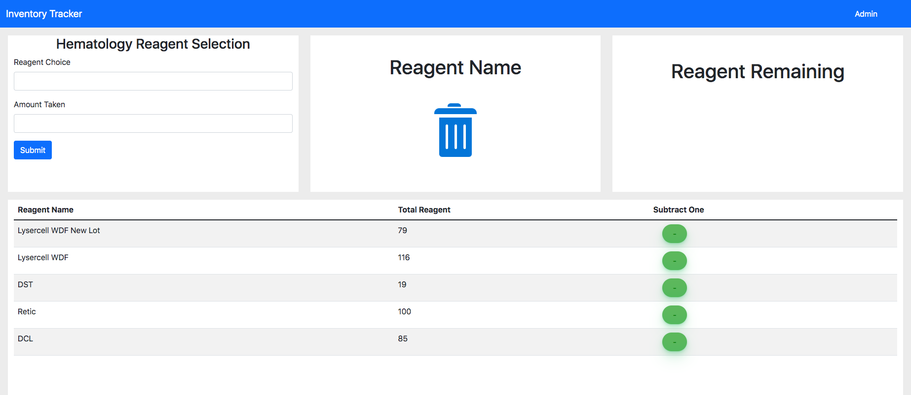
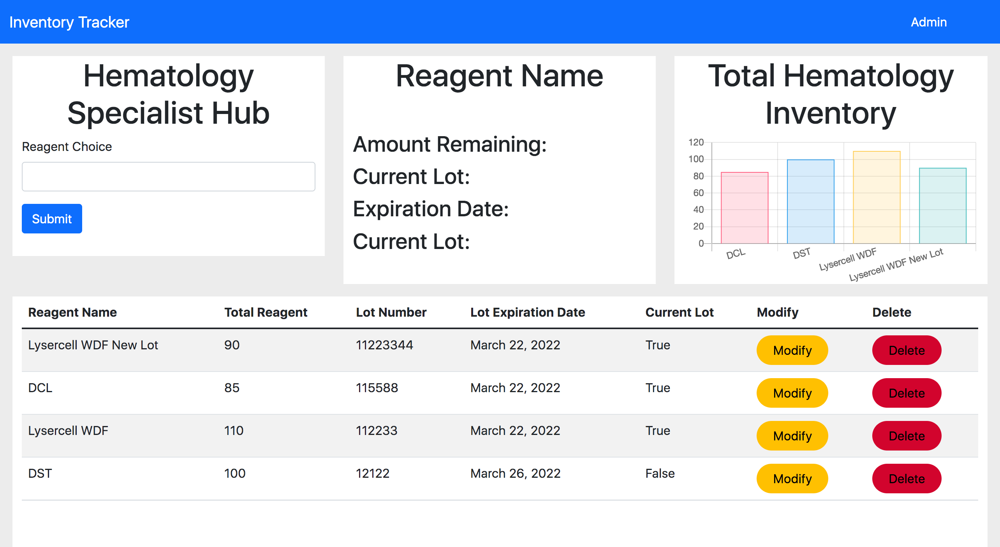

Inventory Tracker Version Two
Inventory Tracker was my first attempt to build a program. I had big ideas but lacked the skill to translate this to code. After more practice and study, I was able to go back and build the program I had once desired. One of my main hangups at the time was an understanding of Javascript. I wanted the user to be able to use a subtract button to take from the current inventory. I was able to build this feature using AJAX.
 After successfully implementing the subtract button, I was able to add a delete button and a modify button to the table. The table displays all the current inventory and allows the user to make modifcations to the reagent or delete them entirely from the database. Inventory Tracker version two also includes an animation created through CSS and Javascript that gives the user a fun way of knowing when they removed a reagent from the inventory.
View CodeBack To Homepage